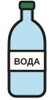

Артём Ярошенко
капитан
Отвечаю за то, чтобы всё было сделано вовремя, проверяю логику калькулятора и данные, занимаюсь продвижением и защитой.

Мы студенты ГУАП, группа 4528. Сайт сделан в рамках проектной деятельности. Хотели сделать то, чем сами бы пользовались.
Отвечаю за то, чтобы всё было сделано вовремя, проверяю логику калькулятора и данные, занимаюсь продвижением и защитой.
Рисовал дизайн и сверстал сайт на HTML, CSS и JavaScript.
Придумывал структуру, писал тексты, собирал данные, вёл пояснительную записку и паспорт проекта.
Нашли ошибку или есть идея? Напишите нам: контакт команды пока не указан
Помоги нам, пройди короткий опрос о питании. Он анонимный и займёт около трёх минут.
Проект по дисциплине «Основы проектной деятельности», ГУАП, Санкт-Петербург. Код сайта открыт на GitHub.
Всё это лежит только в памяти браузера на твоём устройстве. Счётчиков, рекламы и сторонних скриптов на сайте нет, шрифты тоже лежат у нас.